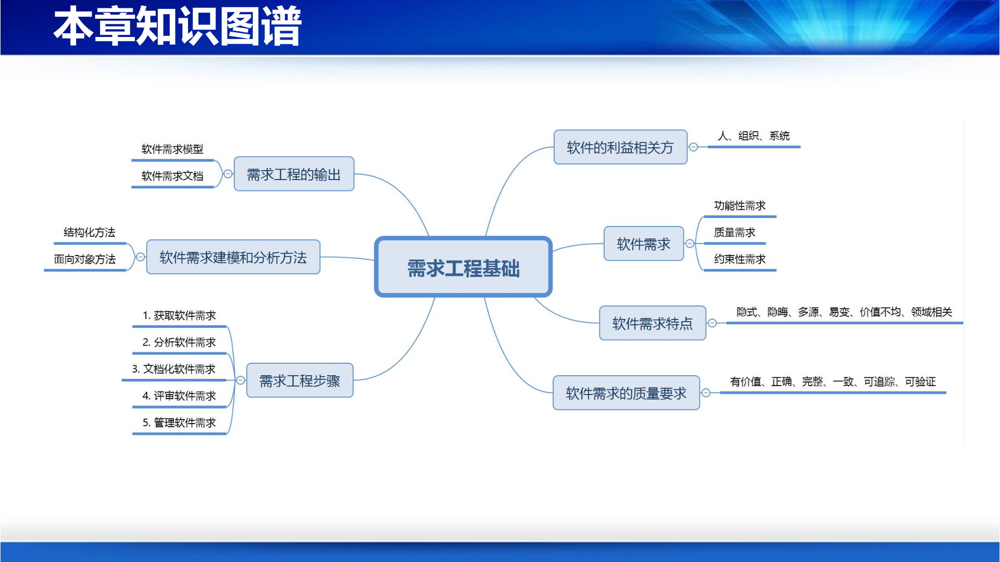
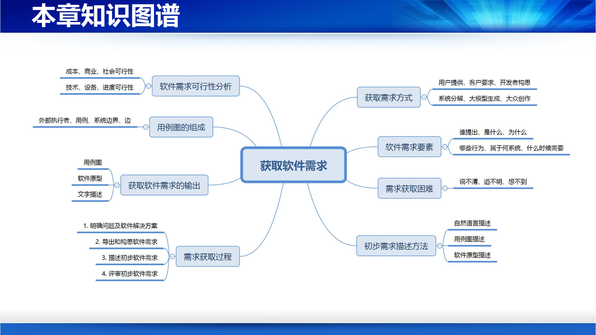
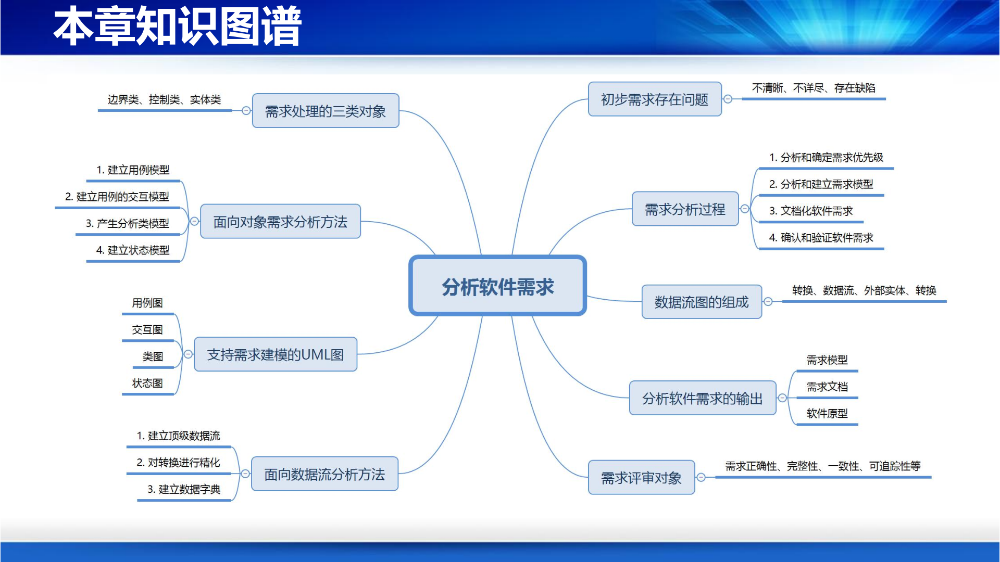

本讲范围：2.1 需求工程基础、2.2 获取软件需求、2.3 分析软件需求。 对应课程：软件工程（西安电子科技大学）。
本章知识图谱

软件开发的本质，是把软件利益相关方（stakeholder）对现实世界的“期望和要求”转化为可运行的软件系统。该过程需要融合领域知识与技术知识：
开发软件系统的前提是明确用户的期望和要求，即软件需求。
利益相关方指从软件系统中受益或与软件系统相关的人、组织或系统：
表现形式包括：
| 类型 | 说明 | 示例 |
|---|---|---|
| 用户（User） | 最终使用软件的人 | 旅客、患者 |
| 客户（Customer） | 从中获取利益的组织 | 国家铁路集团、医院 |
| 开发者（Developer） | 负责开发软件系统的人 | 软件工程师、需求工程师 |
| 系统（System） | 与待开发系统进行交互的系统 | 支付网关、身份认证系统 |
| 组织（Organization） | 提出系统开发和使用软件的机构 | 学校、企业、政府部门 |
示例：Mini-12306 软件的利益相关方 - 旅客：需要购票、退票、改签等功能； - 售票员：帮助旅客完成购票、退票、改签等服务； - 系统管理员：设置系统配置信息（如提前预售天数）。
定义1（从利益相关方角度）：软件系统的利益相关方对软件系统的功能和质量，以及软件运行环境、交付进度等方面提出的期望和要求。
定义2（从软件本身角度）：软件需求是指软件用于解决现实世界问题时所表现出的功能和性能等方面的要求。
简言之，软件需求刻画了软件系统能做什么（What to do）、应表现出怎样的行为、需满足哪些条件和约束。
软件需求通常分为三大类：
能够完成的功能及在某些场景下可展现的外部可见行为或效果。
例：Mini-12306 的注册、登录、查询车次、购票、退票、改签。
开发成本、交付进度、技术选型、遵循标准、运行环境等方面的要求。
非功能性需求 = 软件质量需求 + 约束需求。
需求类别汇总表：
| 类别 | 内涵 | 关注的利益相关方 | 示例 |
|---|---|---|---|
| 功能性需求 | 软件具有的功能、行为和服务 | 用户、客户、开发者群体、其他系统 | 分析和识别老人语音呼叫；分析异常状况 |
| 内部质量需求 | 软件的内部质量属性 | 开发者群体 | 可维护性、可扩展性、可理解性、可重用性 |
| 外部质量需求 | 软件的外部质量属性 | 用户、客户、开发者群体、其他系统 | 界面操作在1秒内响应；视频延迟不超过2秒 |
| 开发约束性需求 | 软件开发需满足的要求 | 客户、开发者群体、其他系统 | 6个月内交付；运行在Android之上；采用Java实现 |
示例：Mini-12306 软件的需求 - 功能性需求：注册、登录、查询车次、购票、退票、改签等； - 质量需求：界面反应控制在1秒内；保护旅客个人敏感信息；抵御外部网络攻击； - 约束需求：开发成本控制在100万元以内；6个月内交付；App需部署在Android、iOS、鸿蒙等操作系统。
| 特点 | 说明 |
|---|---|
| 隐式性 | 需求来自利益相关方，隐式存在，很难辨别，容易遗漏 |
| 隐晦性 | 在利益相关方潜意识中，不易表达；表述常存在模糊、歧义、二义性 |
| 多源性 | 存在多个利益相关方，需求可能冲突、不一致 |
| 易变性 | 用户对软件的期望经常变化，贯穿整个生命周期 |
| 领域知识的相关性 | 需求内涵与所在领域知识密切相关（如12306与铁路旅客服务领域） |
| 价值不均性 | 不同需求对用户/客户的价值不同，需区分主要/次要、核心/外围需求 |
如何从利益相关者获取完整、清晰、一致和有价值的软件需求，是需求工程的核心挑战。
| 质量要求 | 说明 |
|---|---|
| 有价值（Valuable） | 基于计算机软件的解决方案能有效提高问题解决效率和质量，促进业务创新 |
| 正确（Right） | 反映利益相关方的期望，不能曲解或误解 |
| 完整（Complete） | 不能有遗漏或丢失 |
| 无二义（Unambiguous） | 描述清晰、准确，避免歧义 |
| 可行（Feasible） | 在技术、经济等方面可行 |
| 一致（Consistent） | 需求之间不应存在冲突 |
| 可追踪（Traceable） | 可追踪到需求源头 |
| 可验证（Verifiable） | 可找到方式检验需求是否在系统中实现 |
如果需求存在以下问题，将带来严重后果：
定义：用工程化的理念和方法来指导软件需求实践。它提供了一系列的过程、策略、方法学和工具，帮助需求工程师加强对业务或领域问题及其环境的理解，获取和分析软件需求，指导软件需求的文档化和评审，以尽可能获得准确、一致和完整的软件需求，产生软件需求的相关软件制品。
所谓“工程化”，即提供相关的过程、步骤、方法、工具等。
获取 → 分析 → 文档化 → 确认和验证
初步软件需求 → 软件需求模型 → 软件需求文档 → 确认后的软件需求
↑___________________________________↓
软件需求管理
| 方法 | 核心问题 | 说明 |
|---|---|---|
| 抽象 | 如何理解和抽象软件需求？ | 结构化需求工程：数据、数据的处理；面向对象需求工程：对象、交互和行为 |
| 建模 | 如何刻画和描述软件需求？ | 自然语言或结构化自然语言；图形化建模语言（数据流图、UML图） |
| 分析 | 如何精化和分析软件需求？ | 循序渐进获得需求细节，发现和解决问题，建立准确一致的模型 |
抽象有助于揭示需求的本质，建模有助于表达和交流，分析有助于精化和发现问题。
需求工程师负责：
应具备：
结构化方法认为：软件的功能具体表现为对数据的处理。如果说清楚了软件有哪些数据以及要对这些数据做什么样的处理，也就说清楚了软件具有什么样的功能。
数据流图用于绘制软件系统中的数据及其处理，包含四种基本元素：
| 元素 | 说明 | 图形符号 |
|---|---|---|
| 转换（Process） | 对数据进行的加工和处理，产生新的数据 | 椭圆形/圆角矩形，内部附名称 |
| 数据流（Data Flow） | 数据在不同转换、外部实体、数据存储之间的流动 | 有向边，边上附数据名称 |
| 外部实体（External Entity） | 位于软件系统边界之外的数据产生者或消费者（人或系统） | 矩形框，内部附实体名称 |
| 数据存储（Data Store） | 数据的存放场所，如文件、数据库 | 开口矩形/双横线，附存储名称 |
示例：Mini-12306 的数据流图 顶级数据流图中，外部实体包括旅客、售票员、系统管理员；系统内部转换可细化为注册登录、查询车次、购票、退票、改签、系统设置等；数据存储包括用户信息、车次信息、车票信息、订单信息等。
现实世界和计算机世界都是由多样化的对象构成的，每个对象都有其状态并可提供功能和服务，不同对象之间通过交互协作来实现功能和提供服务。
面向对象软件工程提供对象、类、属性、操作、消息、继承、多态等概念来抽象表示现实世界的应用，分析其软件需求特征，建立软件需求模型。
面向对象需求分析方法学还提供可视化建模语言，帮助建立多视点的软件需求模型，如用例模型、交互模型、分析类模型等。
对象是具体、有意义、存在着的实体，是个体或事物的抽象表示。对象可以是现实世界中的应用领域对象，也可以是计算机世界中的软件实体。
对象由属性（Attribute）和操作（Operation）构成：
类是对一组具有相同特征对象的抽象，是分类、组织机制，将具有相同特征的对象组织为一类，封装了属性和操作。
消息传递是实现对象间通讯和协作的基本手段。一个对象向另一个对象发送消息来请求其服务。
received-obj.msg-name(para.)注意：消息传递发生在对象（而非类）之间。
继承表示类与类之间的一般与特殊关系，模拟现实世界类之间的遗传关系。
继承分为：
操作的外部接口定义形式相同，但内部实现方式不同。同一个操作作用于不同对象上可有不同解释，并产生不同结果。
多态的执行方式：从具体子类开始，沿继承结构向上查找，直至发现匹配实现。
子类增加或重新定义所继承的属性或方法，用新定义的属性和方法来覆盖所继承的、来自父类中的属性或方法。
一个类中有多个同名操作，但它们在操作数或操作数类型上有区别，系统根据实参引用不同方法。
二者均描述整体-部分关系，部分类对象是整体类对象的组成部分。
| 关系 | 说明 | 示例 |
|---|---|---|
| 聚合 | 部分类对象可以是多个整体类对象的组成部分，可为多个整体共享 | 老师与大学（老师可兼职） |
| 组合 | 部分类对象只能位于某个整体类对象中；整体消亡，部分也无法生存；整体需管理部分的生命周期 | 校长与大学（校长不可兼职） |
面向对象建模语言是基于面向对象的概念和抽象，提供图形化图符来表示软件系统的一种语言。其目的在于建模（绘制和描述软件系统模型）和支持交流（便于开发人员之间的沟通）。
建模语言由语法、语义、语用三部分组成。
UML用途：可视化（visualize）、描述（specify）、构造（construct）、文档化（document）软件密集型系统的各种产品，支持不同人员之间的交流。
| 视点 | 说明 | UML图 |
|---|---|---|
| 结构视点（Structural View） | 描述系统的构成 | 包图、类图、对象图、构件图 |
| 行为视点（Behavioral View） | 刻画系统的行为 | 交互图（顺序图、通信图）、状态图、活动图 |
| 部署视点（Deployment View） | 刻画目标软件系统的软件制品及其运行环境 | 部署图 |
| 用例视点（Use Case View） | 刻画系统的功能 | 用例图 |
UML的视点及图汇总表：
| 视点 | 图（Diagram） | 说明 |
|---|---|---|
| 结构 | 包图（Package Diagram） | 从包层面描述系统的静态结构 |
| 结构 | 类图（Class Diagram） | 从类层面描述系统的静态结构 |
| 结构 | 对象图（Object Diagram） | 从对象层面描述系统的静态结构 |
| 结构 | 构件图（Component Diagram） | 描述系统中构件及其依赖关系 |
| 行为 | 状态图（Statechart Diagram） | 描述状态的变迁 |
| 行为 | 活动图（Activity Diagram） | 描述系统活动的实施 |
| 行为 | 通信图（Communication Diagram） | 描述对象间的消息传递与协作 |
| 行为 | 顺序图（Sequence Diagram） | 描述对象间的消息传递与协作（强调时序） |
| 部署 | 部署图（Deployment Diagram） | 描述系统中工件在物理运行环境中的部署情况 |
| 用例 | 用例图（Use Case Diagram） | 从外部用户角度描述系统功能 |
示例：用例图描述软件的功能性需求；顺序图描述功能的业务逻辑。
| 工具类型 | 代表工具 |
|---|---|
| 需求文档撰写工具 | Microsoft Office、WPS |
| 需求建模工具 | Microsoft Visio、Rational Rose、StarUML、CodeArts Modeling |
| 软件原型开发工具 | Mockplus、Axure RP Pro、UIDesigner |
| 需求分析和管理专用工具 | IBM Rational RequisitePro |
| 配置管理工具和平台 | Git、GitHub、GitLab、PVCS、Microsoft SourceSafe |
需求工程主要输出三类制品：
| 章节 | 主要内容 |
|---|---|
| 1. 文档概述 | 编写目的、读者对象、组织结构、术语定义、参考文献 |
| 2. 软件系统的一般性描述 | 系统概述、边界和范围、用户特征、假设与依赖 |
| 3. 软件功能性需求 | 功能概述、需求优先级、功能需求描述 |
| 4. 软件质量要求 | 系统质量要求、质量要求的优先级 |
| 5. 软件开发约束性要求 | 设计约束、运行环境、进度和交付、验收、用户界面、软硬件接口 |
| 6. 附录 | 补充材料 |
常见需求缺陷包括：
软件需求管理包括：
本章知识图谱

软件需求不会无缘无故产生，任何需求都有其出处和动机。获取软件需求是指得到或产生软件需求，是需求分析的基础，也是软件开发的首要工作。
要说清楚一项软件需求，需说清楚以下6个方面：
| 要素 | 问题 |
|---|---|
| Who | 谁会关心该项软件需求，他们有何特点和诉求 |
| What | 软件需求的内涵是什么 |
| Why | 为什么需要该需求，想解决什么样的问题 |
| Where | 软件需求归属于哪些子系统 |
| How | 软件需求包含哪些行为，它们如何解决问题 |
| When | 什么时候需要该项软件需求 |
| 困难 | 说明 |
|---|---|
| 需求想不清 | 需求并非简单实现业务流程，而是要改造流程形成基于软件的解决方案，利益相关方熟悉业务但难以形成软件需求 |
| 需求道不明 | 不清楚需求具体内涵，难以清晰、准确、详实地讲明白需求是什么 |
| 需求想不到 | 一些系统是全新的，现实世界没有可模仿和参照对象，构思需求更困难 |
| 方法 | 说明 |
|---|---|
| 访谈和会议（Interview） | 召开相关会议，走访相关人员，从对象中获得需求 |
| 调查问卷（Questionnaire） | 设计问卷，面向不同角色用户，了解业务流程和期望 |
| 现场观摩 | 观摩业务过程、步骤和输出，了解工作流程及细节 |
| 分析业务资料 | 收集和阅读业务材料，了解业务及其流程 |
| 软件原型 | 快速构造可运行原型，展示操作流程和交互，帮助用户确认和导出需求 |
| 群体化方法（Crowdsourcing） | 让互联网上海量开放群体参与需求构思，集思广益 |
| 大脑风暴（Brainstorming） | 组织相关人员非正式、开放地讨论，捕捉需求灵感 |
| 大模型生成 | 通过ChatGPT等大模型工具，根据提示生成需求描述、用户故事等 |
不足：
小组成员包括：利益相关者（如用户）、软件需求分析人员、软件质量保证人员等。目的是共同工作、加强联系、促进交流、增进合作。
存在问题 → 明确问题及基于软件的解决方案 → 导出和构思软件需求 → 描述初步软件需求 → 评审初步软件需求
↓ ↓ ↓ ↓
软件问题和软件解决方案 软件功能性和非功能性需求 初步软件需求描述 确认后的初步需求
每一个软件都试图解决特定领域中的问题，并提供基于软件的问题解决方案。软件需求必须服从和服务于软件欲解决的问题，才有意义和价值。
示例：12306软件与铁路旅客服务领域相关，目的是改变落后的旅客服务和业务模式，提高旅客服务质量，降低旅客服务成本。
软件可以：
应发挥软件优势，为问题解决提供新颖、有效的途径。
软件需求来自利益相关方，因此首先要搞清楚系统有哪些利益相关方。利益相关方可以是特定人群、组织或系统，开发者也可以成为利益相关方。
示例：Mini-12306的利益相关方 - 旅客（Passenger）：购票、查询车次、退票、改签； - 售票员（TicketSeller）：帮助旅客完成购票、退票、改签等服务； - 系统管理员（Administrator）：设置系统参数，如提前预售天数、售票员账号密码等。
创意来自：
移动互联网、机器人、无人系统、物联网、可穿戴设备、大数据分析等。
示例：Instagram 照片和视频共享、在线服务软件；成立于2010年，最多只有13个雇员（5个软件工程师），2012年被Facebook以10亿美元收购。
非功能性需求包括软件质量要求和软件开发的约束性要求。
非功能性需求越来越重要，有时直接决定软件是否可用、好用、高效、可靠、便于维护。
示例：Mini-12306的非功能需求 - 性能：界面响应不超过1秒； - 可靠性：每周7天、每天24小时可用；正常运行时间比例99%以上；故障不丢失已提交数据；5分钟内恢复正常； - 易用性：界面简洁直观； - 安全性：抵御网络攻击； - 私密性：用户数据不被非授权人员访问； - 可移植性：App方便移植到其他移动操作系统； - 运行环境约束：Android 4.4、鸿蒙3.0、iOS 17以上； - 本地化与国际化：支持中英文界面。
并非所有利益相关方提出的期望和要求都应成为软件需求。如果要求与软件及其欲解决的问题无关、没有实际意义和价值、或在技术等方面不可行，则应剔除。需求工程师需要鉴别真正有意义和有价值的重要需求，剔除无意义和无价值的要求。
初步软件需求通常较粗略，只是一个初步的需求轮廓，不够具体和详尽，可能存在遗漏、不一致和冲突等问题，后续需要进一步精化和分析。
描述初步需求的方法：
自然语言是最常用的需求描述手段，可描述功能性需求、质量需求和开发约束需求，详细刻画需求内容，便于各方理解交流。但存在二义性、不直观的局限性。
示例： - 功能性需求：软件系统应提供查询车次功能，旅客输入出发地、目的地及日期，系统应查询出满足条件的所有车次。 - 质量需求：系统中的用户数据不被非授权人员访问和获取。 - 约束需求：客户端App软件须运行在Android 4.4及以上版本的操作系统。
用例图用于描述软件系统的边界以及软件外部使用者所观察到的系统功能。“观察到”指外部使用者与系统存在交互，即信息输入和输出。
| 元素 | 说明 | 图形符号 |
|---|---|---|
| 执行者（Actor） | 系统的外部使用者，可以是一类用户、其他系统或物理设备；是UML中的类，代表一类用户或外部实体，而非具体实例 | 火柴人图形，下方附名称 |
| 用例（Use Case） | 执行者为达成一项相对独立、完整的业务目标而要求系统完成的功能；表现为执行者与系统之间的业务交互动作序列 | 椭圆形，内部附用例名称 |
| 边 | 执行者与用例间、用例之间、执行者之间的关系 | 线条或带箭头线条 |
| 边界框 | 表示整个软件系统或子系统的边界；框内为系统内容，框外为外部执行者 | 矩形框，顶部标注系统名称 |
| 关系 | 说明 | 应用 |
|---|---|---|
| 包含（Include） | 用例B是用例A的某项子功能；用于提取多个用例中的公共子功能，避免重复和冗余 | “购票”包含“支付”；“监视老人状况”包含“自主跟随老人” |
| 扩展（Extend） | 用例A与B相似，但A功能较B多，A的动作序列在B的动作序列某些执行点上插入附加动作序列而成；用于区隔正常业务和例外处理 | “Create Course Plan for Qian Class”扩展“Create Course Plan” |
| 继承（Inherit） | 用例A与B相似，但A的动作序列通过改写B的部分动作或扩展B的动作获得；体现功能改写 | 特殊用例继承一般用例 |
区别：包含用于公共子功能抽取；扩展用于在基础用例上附加例外或增强功能；继承用于功能的改写和特化。
用例图不够详细，通常还需要对用例进行文字描述：
示例：退票用例描述 - 用例名：退票 - 用例标识：UC-RefundTicket - 主要执行者：旅客、售票员 - 目标：将购买的车票退票 - 范围：Mini-12306 - 前置条件：已经登录系统 - 交互动作： 1. 提供待退票的车票； 2. 验证车票的合法性； 3. 将车票退票，设置车票为“未出售”状态； 4. 将车票费用退回到旅客的银行卡中。
获取软件需求阶段的主要输出：
评审维度包括：
| 可行性类型 | 说明 |
|---|---|
| 技术可行性 | 所需技术是否成熟，现有技术能否支撑实现，团队是否掌握关键技术 |
| 设备可行性 | 解决方案需要哪些设备或系统，团队是否已具备 |
| 进度可行性 | 针对团队人力资源及技术水平，能否按进度约束开发出满足需求的产品 |
| 成本可行性 | 基于项目成本约束，能否开发出满足需求的产品 |
| 商业可行性 | 需求是否有商业价值，能否获得用户青睐和市场认可，投入能否获得预期收益 |
| 社会可行性 | 需求是否违背社会道德、文化伦理、法律法规、行业标准等 |
本章知识图谱

初步软件需求存在以下问题：
软件需求还是“粗胚”，需要“打磨”。
示例："用户首先登录到系统中，选择要退票的车票，系统将自动地完成退票工作，并提示用户退票的结果"——这段描述没有说清楚退票的具体步骤、业务规则、异常处理等，因此不够详尽。
基于初步软件需求，进一步精化和分析软件需求，确定软件需求优先级，建立软件需求模型，发现和解决软件需求缺陷，形成高质量的软件需求模型和软件需求规格说明书。
参与人员包括：利益相关方（用户、客户等）、需求工程师、项目管理者、测试和设计工程师。
父图与子图的平衡：针对父图中被精化的转换，它的每一个输入和输出数据流要与精化后产生的数据流图中的输入或输出数据流保持一致。
旅客注册信息 = 旅客姓名 + 身份证 + 银行卡 + 手机号
旅客姓名 = 长度为5的汉字字符串
身份证 = 18位的身份证号码
银行卡 = 开户行 + 银行卡号
手机号 = 11位的数字串
| 视角 | 关注的问题 | UML图 |
|---|---|---|
| 用例视角 | 具有哪些功能、功能间有何关系、功能与利益相关方有何关系 | 用例图 |
| 行为视角 | 用例如何通过业务领域中一组对象及它们间的交互来达成 | 交互图、状态图 |
| 结构视角 | 业务领域有哪些重要概念以及它们之间具有什么关系 | 类图 |
支持需求建模和分析的UML图：
| 需求模型 | 视角 | 软件需求的内涵 | 需求阶段 |
|---|---|---|---|
| 用例图 | 用例 | 软件的功能及相互间的关系 | 获取软件需求 |
| 交互图 | 行为 | 功能完成所涉及的对象及相互间的交互和协作 | 分析软件需求 |
| 状态图 | 行为 | 对象的状态变化 | 分析软件需求 |
| 类图 | 结构 | 业务领域概念及相互关系 | 分析软件需求 |
UML交互图刻画对象间的消息传递，分析如何通过交互协作完成功能。包括两类：
二者表达能力相同，可相互转换。
顺序图描述对象间的消息交互序列：
对象表示：[对象名] : [类名]，如 "Tom:Student" 或 "Student"。
消息传递表示：[*][监护条件] [返回值:=]消息名[(参数表)]。其中 * 为迭代标记，表示同一消息对同一类的多个对象发送。
消息类型：
| 消息类型 | 说明 | 图符特点 |
|---|---|---|
| 同步消息 | 发送者等待接收者处理完后再继续 | 实心三角箭头或实心箭头 |
| 异步消息 | 发送者发出消息后不等待，继续自己的处理 | 开口箭头 |
| 自消息 | 一个对象发送给自身的消息 | 消息指向自身生命线 |
| 返回消息 | 某条消息处理完成，结果沿返回消息传回 | 虚线箭头 |
| 创建消息 | 目标对象的创建 | 消息指向新创建对象 |
| 销毁消息 | 目标对象的删除 | 生命线终止处画“×” |
特别注意图符的画法和要求，尤其是箭头图形（线条和箭头形状）。
通信图：
类图描述系统的类构成，刻画系统的静态组成结构。
图的构成：
类的UML表示：一个类用三层矩形表示：
┌─────────────────┐
│ Order │ ← 类名
├─────────────────┤
│ -id: integer │ ← 属性
│ -quantity: integer = 0 │
├─────────────────┤
│ +Order(id: integer) │ ← 操作/方法
│ +getQuantity(): integer│
│ +setQuantity(id: integer)│
│ +addOrder(id: integer) │
│ +cancelOrder(id: integer)│
└─────────────────┘
属性的表示：
[可见性] 名称 [: 类型] [多重性] [= 初值] [{约束特性}]
+ 公开，所有对象均可访问；# 保护，所在类及子类对象可访问；- 私有，仅所在类对象可访问。1、0..1、0..*、1..*、*。{readOnly}：只读；{ordered}：属性取值有序；{bag}：允许重复元素；{static}：静态属性。方法的表示：
[可见性] 名称[(参数表)] [: 返回类型] [{约束特性}]
{isQuery = true}：查询操作（不修改状态）；{isPolymorphic = true}：允许多态；{concurrency = sequential/guarded/concurrent}：并发性；接口（Interface）：一种不包含操作实现部分的特殊类。
| 关系 | 说明 | 图符 |
|---|---|---|
| 关联（Association） | 类间的逻辑联系；可标注多重性、角色名、约束特性 | 实线，可带箭头 |
| 聚合（Aggregation） | 整体-部分关系，部分可为多个整体共享 | 空心菱形指向整体 |
| 组合（Composition） | 整体-部分关系，部分只能属于一个整体，整体消亡部分也消亡 | 实心菱形指向整体 |
| 依赖（Dependency） | 一个类变化会导致另一类变化 | 带箭头的虚线 |
| 实现（Realization） | 一个类实现另一个类中定义的接口 | 带空心三角的虚线 |
| 继承（Generalization） | 一般与特殊关系，子类继承父类 | 带空心三角的实线，指向父类 |
依赖的形式：使用、追踪、精化、实现、派生。
绘制类图的注意事项：
对象图是类图在系统运行过程中某个时刻点上或某一时间段内的实例化样本：
通常而言，对象图不常用，仅在需要分析特定观察点的对象情况时使用（如系统创建之时、某些对象消亡之前）。
状态图描述实体（对象、系统）在事件刺激下的反应式动态行为及其导致的状态变化，刻画实体的可能状态、每个状态下可响应事件、响应动作、状态迁移。
图的构成：
基本概念：
| 概念 | 说明 |
|---|---|
| 状态 | 对象属性取值构成的一个约束条件；相同状态下对象对事件的响应行为完全一样 |
| 事件 | 某时刻发生、需要关注的瞬时刺激；包括消息型事件（同步）、信号型事件（异步）、时间型事件、条件型事件 |
| 动作（Action） | 计算过程，位于迁移边上，简单，执行时间短 |
| 活动（Activity） | 计算过程，位于状态中，复杂，执行时间长 |
复合状态：
状态的表示：由状态名及可选的入口活动、出口活动、do活动、内部迁移构成。
迁移的表示：迁移标注为 [事件] [监护条件] [/ 动作]。
状态图绘制原则：
示例：“车票（Ticket）”对象的状态图。车票可能处于“未售出”、“已售出”、“失效”等状态；在“购票”事件下从“未售出”迁移到“已售出”；在“退票”事件下从“已售出”迁移到“未售出”；超过有效期可迁移到“失效”状态。
示例：Mini-12306的需求重要性 - 核心：注册、登录、查询车次、购票、支付、退票、改签； - 外围：系统设置。
用户对实现需求的优先级要求不同。优先级考虑因素：
示例：Mini-12306的需求优先级 - 最高优先级：注册、登录、查询车次、购票、支付； - 次之：退票、改签； - 最低：系统设置。
确保有序地开展需求分析、设计和实现工作，每次迭代有明确的需求集，迭代结束后可向用户交付急需功能。
考虑因素：
Mini-12306需求开发安排示例：
| 序号 | 用例名称 | 用例标识 | 重要性 | 优先级 | 开发迭代次序 |
|---|---|---|---|---|---|
| 1 | Register | UC-Register | 核心 | 高 | 第一次迭代 |
| 2 | Login | UC-Login | 核心 | 高 | 第一次迭代 |
| 3 | QueryTrain | UC-QueryTrain | 核心 | 高 | 第一次迭代 |
| 4 | BuyTicket | UC-BuyTicket | 核心 | 高 | 第一次迭代 |
| 5 | Pay | UC-Pay | 核心 | 高 | 第一次迭代 |
| 6 | RefundTicket | UC-RefundTicket | 外围 | 中 | 第二次迭代 |
| 7 | ChangeTicket | UC-ChangeTicket | 外围 | 中 | 第二次迭代 |
| 8 | SetSystem | UC-SetSystem | 外围 | 低 | 第三次迭代 |
分析和建立用例的交互模型
├── 分析和确定用例所涉及的对象及其类
├── 分析和确定对象之间的消息传递
└── 绘制用例的交互图
分析和建立分析类模型
├── 确定分析类
├── 确定分析类职责
├── 确定分析类属性
├── 确定分析类之间的关系
└── 绘制分析类图
分析和建立状态模型
└── 绘制状态图
| 分析类 | 说明 | 在顺序图中的位置 |
|---|---|---|
| 边界类（Boundary Class） | 负责目标系统与外部执行者之间的交互；处理输入输出、外部接口 | 最左侧（紧邻执行者）或最右侧（外部接口） |
| 控制类（Control Class） | 完成用例任务的主要协调者；分解任务，分派给其他对象，协调信息交互 | 边界类右侧 |
| 实体类（Entity Class） | 负责保存持久意义的信息项，进行查询、修改、保存等处理，提供业务服务 | 控制类右侧 |
边界类对象作用：
控制类对象作用：
一般而言，控制类不负责处理具体任务细节，而是分解任务并通过消息传递分派给其他对象类完成。
实体类对象作用：
确定消息的名称：
确定消息传递的信息：
绘制顺序图的策略：
一个用例至少构造一个交互图。简单用例一张图足够；复杂用例需要多张交互图，每张刻画特定场景下的交互动作序列。
用例交互图的工作流程：
示例：Mini-12306中“QueryTrain（查询车次）”用例的顺序图 外部执行者“旅客”向“查询界面”边界类发送查询请求；“查询界面”将请求转发给“查询控制”类；“查询控制”类向“车次信息”实体类请求数据；“车次信息”返回结果；“查询控制”处理后通知“查询界面”；“查询界面”将结果显示给旅客。
从各用例的交互模型中汇总得到软件需求的分析类模型。
步骤：
示例：Mini-12306分析类图 分析类可能包括：旅客（Passenger）、售票员（TicketSeller）、系统管理员（Administrator）、车票（Ticket）、订单（Order）、车次（Train）、支付（Payment）、用户信息库（UserLibrary）、车次信息库（TrainLibrary）等。类之间存在关联（如旅客与订单）、聚合（如订单与车票）等关系。
用UML状态图描述对象的状态模型，刻画对象拥有哪些状态、状态如何受事件影响而变化。
注意两点：
| 章节 | 主要内容 |
|---|---|
| 1. 引言 | 编写目标、读者对象、文档概述、术语定义、参考文献 |
| 2. 软件系统概述 | 软件产品概述、用户特征、设计和实现约束、假设与依赖 |
| 3. 功能性需求描述 | 软件功能概述、需求的用例模型、需求的分析模型 |
| 4. 非功能性需求 | 质量需求、约束需求 |
| 5. 界面需求 | 用户界面要求 |
| 6. 接口定义 | 软硬件接口、外部系统接口 |
| 7. 进度要求 | 各阶段交付时间 |
| 8. 交付要求 | 交付形式和验收标准 |
| 9. 验收要求 | 验收依据和流程 |
软件需求模型是文档中的重要组成部分。
内容维度：
形式维度：
| 问题类型 | 解决方法 |
|---|---|
| 遗漏的软件需求 | 再次征求用户、客户、领域专家意见，补充遗漏需求 |
| 无源头的软件需求 | 剔除或暂时不考虑，或置于低优先级 |
| 不一致、相冲突的软件需求 | 寻找更高级别的用户或客户，由他们最终确定 |
| 不正确和不准确的软件需求 | 与用户、客户、领域专家深入沟通，正确理解需求内涵 |
| 不规范的软件需求文档 | 对照规范标准和模板重新撰写 |
| 不规范和不正确的软件需求模型 | 学习UML图符和模型用法，绘制正确规范的模型 |
| 费解的软件需求文档 | 消除冗余表述，提高简洁性，梳理和组织文档格式 |
原题： UML 2.0 中顺序图和协作图（通信图）的定义及区别。
解析/答案：
定义：
区别：
| 对比维度 | 顺序图 | 通信图 |
|---|---|---|
| 核心关注点 | 消息传递的时间顺序 | 对象间的合作关系和结构 |
| 时间表示 | 通过纵轴明确体现时间先后 | 通过消息多层序号体现执行顺序 |
| 对象布局 | 对象沿顶部横向排列 | 对象以网络状/拓扑结构排列 |
| 适用场景 | 刻画用例或场景的动作序列；业务分析和需求建模阶段优先考虑 | 刻画软件内部某项功能的实现构想；设计和实现阶段优先考虑 |
| 等价性 | 二者语义等价，可相互转换 | 二者语义等价，可相互转换 |
联系：
二者同属于UML交互图，表达能力相同，均可描述对象间如何通过消息传递协作完成用例功能。在需求分析阶段，通常优先考虑顺序图，因为它更直观地展示交互时序，便于与用户沟通。
原题： 发帖子系统。输入帖子内容：访客在表单输入文字，系统对其检查，检查无误后，将内容存入文件。显示帖子内容：读出文件，将内容进行处理，以一定格式显示在屏幕上。画出该子系统的数据流图，并将其转化为软件结构图。
解析/答案：
顶级数据流图（0级DFD）：
1级数据流图：
将“发帖子系统”精化为两个主要转换：
根据变换型数据流图映射为软件结构图的方法：
软件结构图可设计为顶层模块“发帖子系统”，下层分为：
发帖子系统
├── 输入帖子内容
│ ├── 获取帖子文字
│ └── 检查帖子内容
├── 显示帖子内容
│ ├── 读取帖子文件
│ ├── 处理帖子内容
│ └── 格式化显示
└── 文件管理
├── 写入帖子文件
└── 读取帖子文件
原题： 某医院拟委托软件公司开发一套预约挂号管理系统，以便为患者提供更好的就医体验，为医院提供更加科学的预约管理。系统的主要功能包括：注册登录，信息浏览，账号管理，预约挂号，查询与取消预约，号源管理，报告查询，预约管理，报表管理和信用管理等。
预约人员（患者）登录系统后发起预约挂号请求，进入预约界面。进行预约挂号时使用数据库访问类获取医生的相关信息，在数据库中调用医生列表，并调取医生出诊时段表，将医生出诊时段反馈到预约界面，并显示给预约人员；预约人员选择医生及就诊时间后确认预约，系统返回预约结果，并向用户显示是否预约成功。
1. 采用面向对象方法对预约挂号管理系统进行需求分析，构建用例图。（4分）
2. 采用面向对象方法对预约挂号过程进行分析设计，构建顺序图。（4分）
3. 简要说明协作图在描述对象之间的动态交互关系时和顺序图存在哪些区别。（2分）
解析/答案：
识别执行者（Actor）：
识别用例（Use Case）：
用例间关系：
《include》 关系；《extend》 关系。预约挂号过程涉及的对象：
消息交互序列（从上到下）：
| 对比维度 | 顺序图 | 协作图 |
|---|---|---|
| 关注重点 | 消息传递的时间顺序 | 对象间的合作关系和链接结构 |
| 布局方式 | 对象横向排列，时间纵向推进 | 对象以拓扑结构排列，通过连接器连接 |
| 消息表示 | 用带箭头的有向边直接表示，按时间上下排列 | 在连接器上标注带序号的消息 |
| 适用阶段 | 需求分析和业务建模阶段更常用 | 设计和实现阶段更常用 |
| 等价性 | 二者可相互转换，表达能力相同 | 二者可相互转换，表达能力相同 |
原题： 现准备为某银行开发一个信用卡管理系统CCMS，该系统的基本功能为：
（1）信用卡申请：非信用卡客户填写信用卡申请表，说明所要申请的信用卡类型及申请者的基本信息，并提交给CCMS。如果信用卡申请被银行接受，CCMS将记录该客户的基本信息，并发送确认函给该客户，告知客户信用卡的有效期及信贷限额；否则该客户将会收到一封拒绝函。非信用卡客户收到确认函后，便成为信用卡客户。
（2）信用卡激活：信用卡客户向CCMS提交激活请求，用信用卡号和密码激活该信用卡。激活操作结束后，CCMS将激活通知发送给客户，告知客户其信用卡是否被成功激活。
（3）信用卡客户信息管理：信用卡客户的个人信息可以在CCMS中进行在线管理，每位信用卡客户可以在线查询和修改个人信息。
（4）交易信息查询：信用卡客户使用信用卡进行的每一笔交易都会记录在CCMS中。信用卡客户可以通过CCMS查询并核实其交易信息（包括信用卡交易记录及交易额）。
1. 采用结构化分析方法，分层（不少于2层）构建该系统的数据流图。（6分）
2. 将构建的系统数据流图转换成软件结构模型。（4分）
解析/答案：
顶级数据流图（0级DFD）：
1级数据流图：
将CCMS精化为以下转换：
数据存储：
数据流：
2级数据流图（以“信用卡申请处理”为例）：
可将“信用卡申请处理”进一步精化为：
数据流：
根据事务型数据流图映射为软件结构图的方法：
软件结构图：
信用卡管理系统（CCMS）
├── 事务调度模块
│ └── 根据请求类型分发到相应处理模块
├── 信用卡申请处理模块
│ ├── 接收申请表
│ ├── 审核申请
│ ├── 生成确认函/拒绝函
│ └── 记录客户信息
├── 信用卡激活处理模块
│ ├── 验证信用卡号和密码
│ ├── 更新激活状态
│ └── 发送激活通知
├── 客户信息管理模块
│ ├── 查询个人信息
│ ├── 修改个人信息
│ └── 更新客户信息库
└── 交易信息查询模块
├── 接收交易查询请求
├── 检索交易记录
└── 返回交易信息
原题： 软件系统建模是软件开发过程中的重要环节，通过构建软件系统模型可以帮助系统开发人员理解系统、抽取业务过程和管理系统的复杂性，也可以方便各类人员之间的交流。软件系统建模是在系统需求分析和系统实现之间架起的一座桥梁，系统开发人员按照软件系统模型开发出符合设计目标的软件系统，并基于该模型进行软件的维护和改进。
2. 说明软件系统开发中常用的建模方法有哪几类？阐述每种方法的特点及其适用范围。（5分）
解析/答案：
软件系统开发中常用的建模方法主要有以下几类：
特点：
适用范围：
特点：
适用范围：
特点：
适用范围：
特点：
适用范围：
特点：
适用范围：
总结比较表：
| 建模方法 | 核心抽象 | 主要工具 | 优点 | 适用范围 |
|---|---|---|---|---|
| 结构化方法 | 数据、处理过程 | 数据流图、数据字典 | 直观、流程清晰 | 数据密集型系统 |
| 面向对象方法 | 对象、类、交互 | UML图 | 贴近现实、可复用、易维护 | 复杂大规模系统 |
| 形式化方法 | 数学符号、逻辑 | Z语言、Petri网、VDM | 精确、可验证 | 高安全可靠性系统 |
| 原型方法 | 可运行原型 | 原型工具、Mockup | 直观、用户参与 | 需求不明确的创新项目 |
| 场景方法 | 用例、用户故事 | 用例图、用户故事卡 | 以用户为中心 | 需求获取与确认 |
原题： 报表处理系统要求用户输入处理报表的日期，日期限制在2017年7月至2022年6月，即系统只能对该时间段内的报表进行处理，如日期不在此范围内，则显示“输入信息有误”等出错提示。系统日期规定由年、月的6位数字字符组成，前四位代表年，后两位代表月。
1. 采用等价划分法，设计报表日期检查的有效等价类和无效等价类；采用边界值分析法选择测试用例。（7分）
2. 简要说明黑盒测试应用于软件测试的哪些阶段，黑盒测试和白盒测试有什么区别？（3分）
解析/答案：
输入条件分析：
有效等价类：
| 编号 | 等价类描述 | 示例 |
|---|---|---|
| V1 | 2017年7月至2017年12月 | 201707, 201712 |
| V2 | 2018年1月至2018年12月 | 201801, 201812 |
| V3 | 2019年1月至2019年12月 | 201901, 201912 |
| V4 | 2020年1月至2020年12月 | 202001, 202012 |
| V5 | 2021年1月至2021年12月 | 202101, 202112 |
| V6 | 2022年1月至2022年6月 | 202201, 202206 |
无效等价类：
| 编号 | 等价类描述 | 示例 |
|---|---|---|
| I1 | 年份小于2017 | 201606, 201612 |
| I2 | 年份大于2022 | 202307, 202312 |
| I3 | 年份等于2017但月份小于7 | 201701, 201706 |
| I4 | 年份等于2022但月份大于6 | 202207, 202212 |
| I5 | 月份小于1（即00） | 201800, 202000 |
| I6 | 月份大于12（即13-99） | 201813, 202215 |
| I7 | 非6位数字字符（长度不对） | 20170, 20170707, 2017ab |
| I8 | 空输入 | "" |
边界值分析测试用例：
边界值应重点测试有效范围的边界点及其邻点。
年份边界：
| 测试用例 | 输入 | 预期结果 |
|---|---|---|
| T1 | 201707 | 有效（区间下界） |
| T2 | 201706 | 无效（年份边界下界邻点） |
| T3 | 202206 | 有效（区间上界） |
| T4 | 202207 | 无效（年份边界上界邻点） |
月份边界：
| 测试用例 | 输入 | 预期结果 |
|---|---|---|
| T5 | 201801 | 有效（月份下界） |
| T6 | 201800 | 无效（月份下界邻点） |
| T7 | 201812 | 有效（月份上界） |
| T8 | 201813 | 无效（月份上界邻点） |
格式边界：
| 测试用例 | 输入 | 预期结果 |
|---|---|---|
| T9 | 201707 | 有效（6位） |
| T10 | 20170 | 无效（5位） |
| T11 | 2017070 | 无效（7位） |
| T12 | 2017a7 | 无效（含非数字字符） |
黑盒测试的应用阶段：
黑盒测试主要应用于：
注意：单元测试主要采用白盒测试，但也可结合黑盒测试进行接口测试。
黑盒测试与白盒测试的区别：
| 对比维度 | 黑盒测试 | 白盒测试 |
|---|---|---|
| 测试依据 | 软件的功能和性能规格说明 | 程序内部结构和代码逻辑 |
| 是否了解内部实现 | 不需要了解程序内部 | 必须了解程序内部结构 |
| 测试对象 | 软件的外部功能和接口 | 程序的内部执行路径和逻辑 |
| 常用方法 | 等价类划分、边界值分析、决策表、因果图、错误推测 | 语句覆盖、分支覆盖、路径覆盖、基本路径测试 |
| 主要目的 | 验证功能是否符合需求 | 发现代码中的逻辑错误和路径缺陷 |
| 适用阶段 | 集成测试、确认测试、验收测试 | 单元测试、集成测试 |
| 优点 | 从用户角度出发，不依赖代码 | 可深入发现代码级缺陷 |
| 缺点 | 可能遗漏内部逻辑错误 | 成本高，无法保证需求覆盖 |
参考教材 - 《软件需求（第三版）》，Karl E. Wiegers 著，清华大学出版社，2016。 - 《需求工程基础——需求工程专业认证考试学习指南基础级/IREB标准（第二版）》，Klaus Pohl, Chris Rupp 著，清华大学出版社，2019。 - 《软件需求与可视化模型》，Joy Beatty, Anthony Chen 著，清华大学出版社，2017。